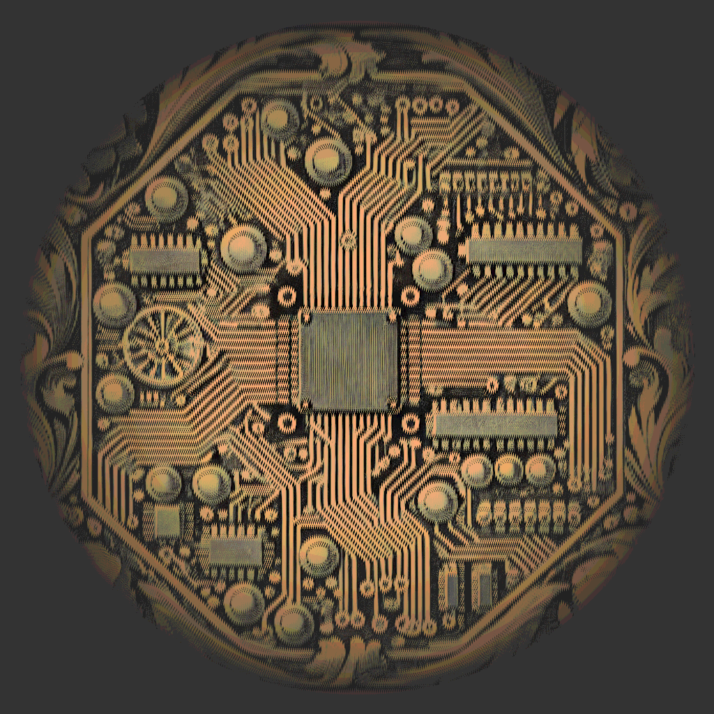

Type theory as a basis for MBSE |

|
Date | 2020-11-29 |
|---|---|---|---|
| Tags |
This post is a response to a flurry of activity in systems engineering academia around using category theory as a theoretical basis for SysML. A number of papers exploring this idea have appeared in th literature recently and as someone who is passionate about category theory and systems engineeering, I can’t help but contribute my thoughts on the matter. In this post I’d like to explore the basics of category theory and the closely related type theory and explain the power that this theoretical basis could bring to model based systems engineering.
What is Category Theory?
Category theory is a field of mathematical study that has received a lot of attention in recent times (and the inspiration for this blog’s title). It is, funnily enough, the study of categories. Mathematicians have used category theory to discover many abstract theorems about the underlying structure of maths; category theory is one of the most abstract fields of mathematical study, so proving a theorem in category theory means that theory is now proven across many other fields of mathematics.
So what is a category? Let’s explore that now. A category is a collection of two types of thing: objects and morphisms. Objects are points with an identifier. Morphisms are arrows that go between two objects. Objects have no structure whatsoever; they’re basically just labels for the ends of morphisms. On top of these things there are also a few rules:
All objects in the category must have at least one morphism from themselves to themselves (usually called id).
id : (a : Object) -> ( a -> a )If there is a morphism from any object
ato any objectband and a morphism frombtoc, these morphisms can be composed to create a third morphism fromatoc:compose : (a : Object, b : Object, c : Object) -> (a -> b) -> (b -> c) -> (a -> c)This composition of morphisms is associative:
association : compose f (compose g h) = compose (compose f g) hFinally, composing a morphism with
idgets you back the original morphism:composeIdL : compose id f = f composeIdR : compose f id = f
By playing within these rules and constructing various categories, mathematicians have found ways to construct category theory analogues of many different fields of maths which has enabled them to discover surprising links between supposedly unrelated fields. For more on the ins and outs of category theory, see Bartosz Milewski’s Category Theory for Programmers. Hold this section in your head for now as we’re going to explore the current state of specification in UML/SysML.
Provability in models
UML (and therefore SysML) are not complete specification languages. This point is made by the researcher Jordi Cabot in his OCL tutorial. Tldr; UML and SysML can only define the structure of the system you’re designing. A constraint language is required to reason about a UML model and to give a complete specification of a system. For example, we could “prove” a model through exhaustively testing the model. Though this is still a valid approach to ‘proving’ a model, it is somewhat time consuming and often incomplete; their may be a set of conditions that you may not have tried that would contravene the constraints. As Edsgar Dijkstra said:
Program testing can be used to show the presence of bugs, but never to show their absence!
This isn’t just a problem with UML though, it actually covers pretty much all programming languages. To solve this problem, it has been a goal for many years in industry to use the language of logic to reason about programmes. The holy grail has been to produce code that is mathematically proven to not be able to fail in certain ways. If you can encode the concept of ‘For All’ into a true statement about your code, you can prove that certain properties hold for all possible inputs for example. The benefits to such techniques to functional safety and cyber security are obvious. Languages that allow programmers to formally reason about code have been available for a while. Notable examples are VDM-SL, Z notation, OCL and Spark Ada. These languages have one thing in common that may have led to their limited adoption in industry: they’re all based on set theory.
Sets and Logic
Set theory (or more formally Zermelo-Frankel Set Theory with Choice (ZFC)) is a foundational theory of maths; that is to say that all proven maths can be proven within the axioms and objects presented by ZFC. The base objects of ZFC are sets and predicates. A set is a unique collection of objects that can be reasoned with using logic and a predicate is a logical statement that reasons about sets and other predicates. Therefore set theory has two parts, sets and logic. Z and OCL are good examples of languages that are based on ZFC logic. Therefore, ZFC set theory has this basic dichotomy built into it, the construction of sets and reasoning in ZFC logic are two different languages. This is also compounded by the fact that OCL has been found to be logically inconsistent. To use these languages, first you must write your code or build your model and then you must use a seperate language to reason about it.
Correct by construction
To find ourselves an alternative to ZFC based languages, we’re going to have to explore a different interpretation of the idea of proof and truth. For this, we will turn to constructivism. Constructivism is a school of mathematical thought that states that to prove a theorem, you must produce evidence of that theorem. In particular, you cannot use the law of the excluded middle in a constructivist proof. This is because a constructivist proof will only allow you to state something as true if you can provide an example that satisfies your predicate.
Constructivism was seen as a bit of a fringe idea until Haskell Curry discovered a correspondence between constructivist logic and programming. Curry discovered that the standard operators of constructivist logic had analogues in the typed lambda calculus. This meant that any constructive logical proposition can be converted into an equivalent computer programme and vice-versa. This effectively showed that constructivist maths corresponds with maths that is computable; if you can prove a theorem constructively, you can also compute all things that satisfy that theorem. A few corresponding concepts between logic and programming are shown in the table below:
| Logical Concept | Symbol | Programming Concept | Symbol |
|---|---|---|---|
| Implication | ⇒ | Function Arrow | -> |
| Conjunction | ∧ | Product Type (tuple) | (a,b) |
| Disjunction | ∨ | Sum Type | Either |
| Truth | ⊤ | An inhabited type | e.g. Int |
| Falsehood | ⊥ | The empty type | Void |
This means that any type declaration in a programming languge with a compatible type system (such as Haskell or Idris) can be read as a logical proposition. The type signature of a generic function a -> b can be read as “If you can give me proof of a, I can give you back a proof of b. Here are some function declarations and their meanings to illustrate the point:
im : Either a b -> cIf you can give im proof of a or proof of b, im can give you proof of c
con : (a, b) -> cIf you can give con a proof of a and a proof of b, con can give you a proof of c. Interestingly, this is equivalent to the type a -> b -> c:
curry : ((a, b) -> c) -> a -> b -> c
uncurry : (a -> b -> c) -> (a,b) -> cThis process of using this equivalence is known as currying after Haskell Curry. It becomes incredibly useful for reuse purposes. I’ll explore usages of currying in SysML in a future blog post. For now, we can appreciate that it is somewhat of a tautology; the logical interpretation of a -> b -> c is: If you can give me a proof of a, I can give you a proof of b -> c.
efq : Void -> aIf you can give efq a member of the Void type, efq can give you anything. The logical principle of explosion. Effectively, this statement means that you can prove anything true if you start from a lie.
not : a -> VoidIf you can give not a value of a, not will give you a value of Void. Since this is is impossible, not represents the logical Not operator: being able to obtain a value of a -> Void (find a mapping from an inhabited type to the empty type) is an absurd proposition. Therefore, if a contains values, Not a will not.
Some programming languages (Such as Idris, Coq and Agda) give you a really useful type called equality that allows you to prove that two propositions are equal:
Equality : a -> b -> Type where
reflex : Equality x xThis statement uses a new notational semantic, the where keyword, that tells us that reflex is a constructor function for Equality. Equality itself is a type that states: If you can give me two values one of type a and one of type b, I can give you back a new type, but only if the two values that you give me are the same (The reflex constructor is only defined for values that are the same). Therefore, type theory gives us a way to express equality in type signatures within programmes! You may have already noticed the use of equality (in its symbolic guise ‘=’) in the earlier rules for categories.
We already know that UML (especially the executable subset fUML) gives us a specification for structure and behaviour, adding the additional ability to express propositions in UML without having to resort to the complexities of OCL would mean that we wouldn’t have to learn two languages to fully specify our designs and domain specific languages in MBSE.
A type theoretical basis would mean that a modelling language could specify both structure and constraints in one unified package!
Interestingly, whilst researching this post, I stumbled across a paper online where researchers had used Haskell to encode both the structure of UML models but also a constraints language. The paper can be found here. Although this paper does not touch on the points in this post, it does show the power of a lnguage like Haskell to encode both languages.
So where does category theory fit into all of this?
It just so turns out that there is a strong correspondence between type theory and category theory: type theories are the internal languages of categories. This means that the objects of a certain category correspond to the types in a certain type theory. The keen-eyed reader will probably have noticed how the notation that I used for morphisms in the section on the rules for category theory was the same notation used for type signatures in the logic section; that’s because they are the same thing!
Category theory is missing a key part of what makes type theory though: the ability to work with elements of types. Technically, there is a way in category theory of inspecting which elements exist in which types but its far easier to play with these elements within a type theory.
The holy trinity
The approach to maths and computer science of using propositions as types, programmes as proofs and using category theory & type theories together is known as computational trinitarianism. Category theory can only give us the “propositions as types” part of the equation but once we get type theory involved, we can express programmes that can act as proofs!
Therefore, focussing solely on category theory for the basis of MBSE is not seeing the wood for the trees. Category theory may be the study of mathematical abstraction but type theory is the fire that breathes truth and interpretation into a category.
So here is where I state the manifesto inherent in the title of this blog: I am calling for an end to the dichotomy between structure and proof; an end to the reliance on set theory as the basis of “truth” in the MBSE world. Let’s replace our logic with judgements and evidence. I am calling for the construction of a category of systems!
If you’ve stuck with me this far, you’re probably the sort who’s interested in learning further. I wholeheartedly recommend diving into the Haskell and Idris programming languages which ignited my interest in this area of study. If you feel that you’re ready for the bleeding edge of maths, I recommend the Homotopy Type Theory book. It’s a free download and I’m currently working my way through it (determinedly but slowly, I must admit) to see what treasures can be found inside for the future of systems engineering.
Conclusion: what needs to change?
First of all, its my belief that we could use a language like Idris to express our systems models completely and conherently in a way that could be easily validated. With a suitable base library (or a prelude as is called in Haskell descendents), Idris could easily be used as a specification language with mathematical proofs built in. The problem, of course, is that engineers like pictures, so Idris would need a graphical notation on top of it that could be something very UML or SysML like.
UML and SysML, despite being supposedly language agnostic, are heavily Java oriented languages. A lot of the more imperative parts of UML could be transformed into a type theoretic setting but UML is so bloated with disconnected concepts that it might not be worth it. The constructs of UML and SysML mean that there are many ways to represent a single concept and this fact leads to huge disparities in modelling philosophies and practices across the MBSE world even within individual teams! A future language would ensure that you could express anything that you’d want to design but with minimal overlap of concepts.
Functional programming languages since early LISPs have taught us that many complex constructs can be expressed in a clean simple syntax. This point has definitely been reached with Haskell and its descendants. UML, like Java, has a bloated syntactical structure, requiring you to individual create and name loads of elements to express simple ideas. A simple test of this is seeing how many elements you have to create and name if you were to create a simple object flow based activity diagram. Every single pin on every function requires creation, a name and a type. There has to be a better way.
Therefore, as systems engineers, we should start exploring the exciting world that a type theoretic basis to MBSE could be. There are many bonuses to using a type theoretic and functional approach to modelling languages that I hope to explore in future blog posts. For now, I hope that I have put forward a convincing enough argument to entice you into wanting to know more about type theory and functional programming. If you have any thoughts yourself on the matter, please pop them in the comments below. If you’ve made it this far, thank you for reading!